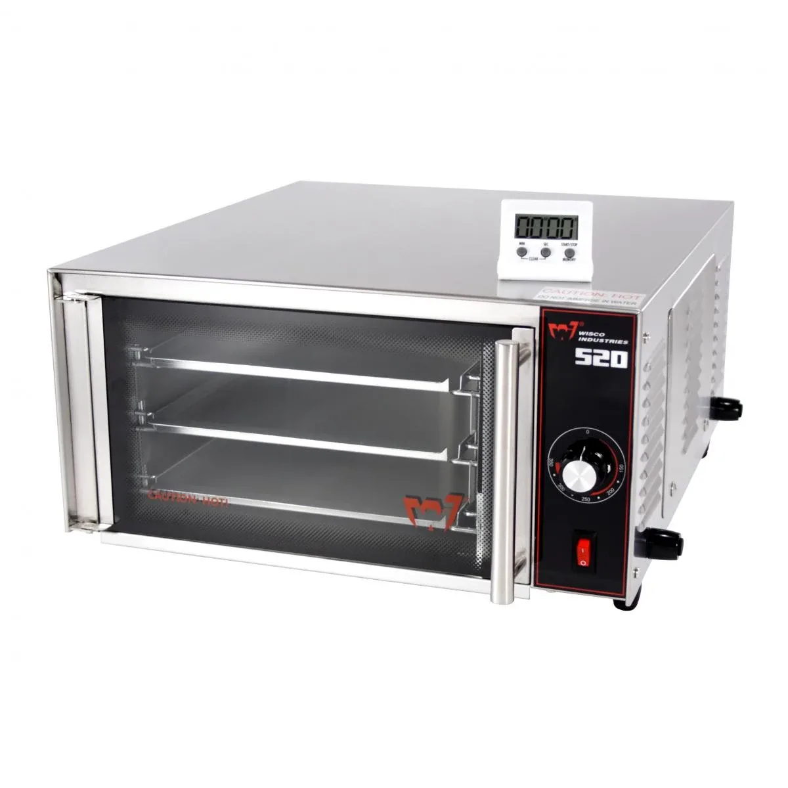
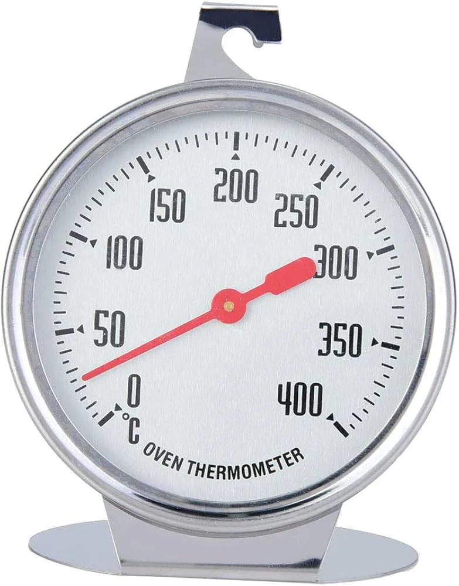
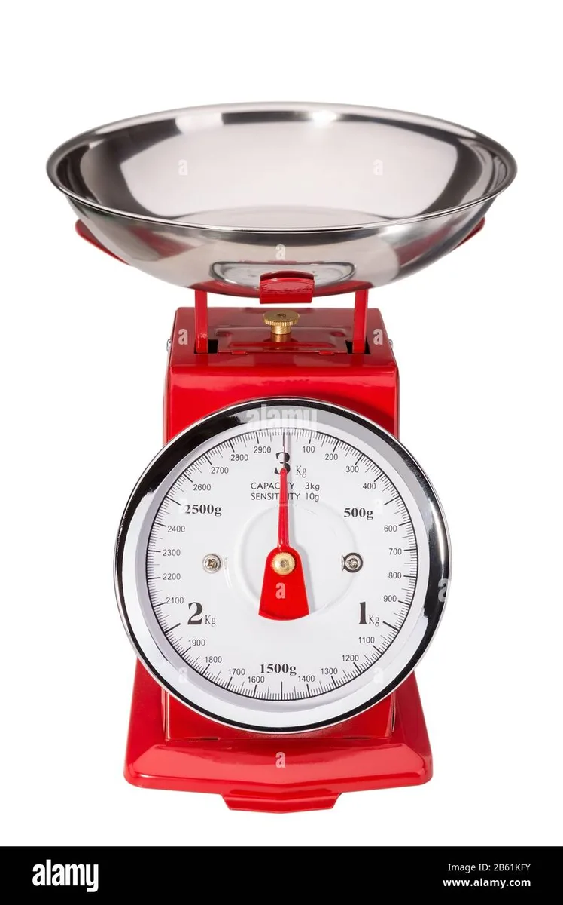
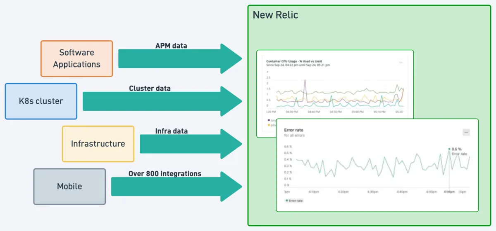
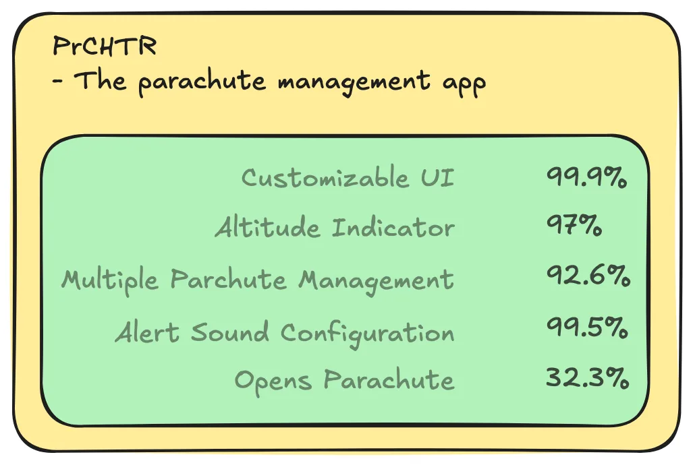
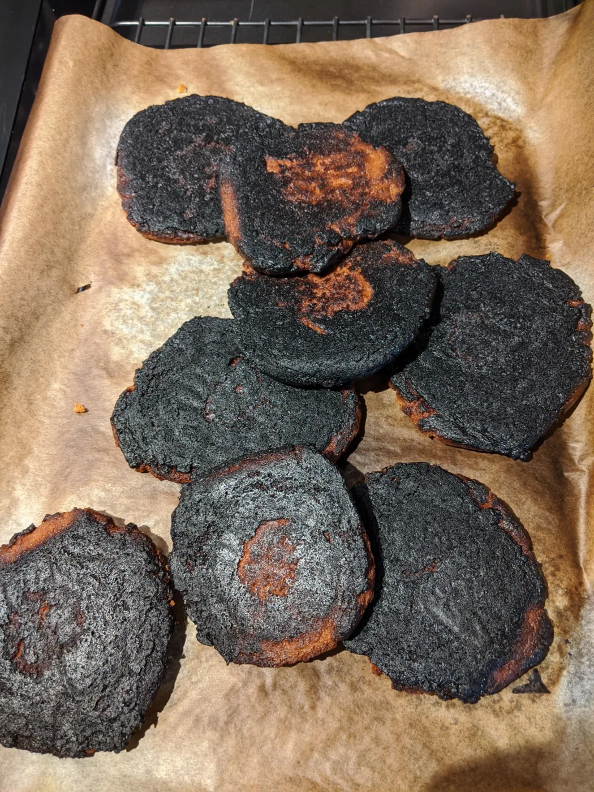

Layout / Topics
- Personal intro
- Company intro
- Background
- Customers?
- Petabytes
- What happened one day
- An incident went undetected
- Many pipelines, many products, only one product
- How data works
- How New Relic queries our data
- The problem with metrics
- Test coverage
- Gaps from unit tests and integration tests. Testing the right thing?
- Think like a customer: aim for determinism
- Agent2Query, baking recipes
- Feature coverage, not code coverage
- Make PMs part of the testing strategy → priority from business impact
- Testing plans: for understanding the services, for better planning, for identifying gaps
- Baking recipes
- Chaos tests and gamedays → based on incidents
- You need metrics → DORA, % customers impacted
What is New Relic
Observability explained to your Grandma
The Product

The Services


The Telemetry





What is New Relic
Observability company

What is New Relic
Observability company
Customers across all industries.
You get the idea…
The importance of Reliability
We are the customers’ eyes
If we have latency, our customers will learn late
If our data is not accurate, our customers will be misled
If we lose data, our customers can’t debug
If we go down, our customers go blind
The importance of Reliability
We track what matters
- Time-to-detect (TTD): how long from the moment something goes wrong to the moment we know about it.
- Time-to-mitigate (TTM): how long from detection to customer impact mitigation.
- Percent of customers impacted: the impact radius of any given incident. It tells us whether we are dealing with a widespread outage or an isolated failure.
- Change failure rate: how often changes to our systems result in an incident or customer impact.
A Learning Opportunity
But first… how pipelines work


A Learning Opportunity
A customer couldn’t fetch their data
Querying their telemetry
(give me all infrastructure data) GoodQuerying their telemetry with conditions
(give me infrastructure data where CPU is over 80%) NadaA Learning Opportunity
How?
- Code coverage was above 80% in that team
- Integration tests were covering all contracts
- Runbooks, synthetic tests, bake times, canary deploys, all in place…
We were missing the customer journey.
Focus your reliability from the customer’s point of view.
A Learning Opportunity
The problem with reliability metrics


“When a measure becomes a target, it ceases to be a good measure”Charles Goodhart
What do we Measure
Metrics should be a conversation starter, never the goal.
Measure from the customer’s perspective.

What do we Measure
The importance of a Product Manager
They define features and roadmaps.
As an engineer you are accountable for things to be running reliably.
The PM tells you what the customer cares about.
Service Level Agreements and Service Level Objectives

Test like a Customer
Agent2Query: reproducing the user’s data journey to New Relic
Test like a Customer
Why is that important? You care about the customer:
- If they see the data
- When they see it
- How they see it
- What they miss
But from the very origin of the data, no synthetic.
With Agent2Query we not only detected issues proactively, but also code correctness issues.
Involve your PM (cont.)
Develop a testing plan
- Runbooks coverage
- Contracts upstream and downstream
- Feature coverage
- Risk matrix
Is this exercise for resiliency only?
Baking Times
You don’t bake a cookie the same way you bake a stew.
Using Stew baking times:


Baking Times
You don’t bake a cookie the same way you bake a stew.
Using Cookies baking times:


The problem with Baking Times
They are not deterministic.
You are playing with the odds that something may happen during the bake time.
Baking recipes: define a list of ingredients (checks)
- Wait for some specific traffic to happen (throughput, data topology, etc.)
- Force a dashboard validation
- Trigger downstream tests
- Force a set of validations
Embrace the Chaos
Chaos tests and gamedays
Make the gamedays a part of the development cycle.
Use your risk matrix, past incidents, and new development as drivers.
And inject chaos:
- Force a high CPU
- Drop a pod
- Inject latency
- Send a swarm of requests

It is not (only) about testing your systems’ resiliency. It is about you understanding your systems.
Embrace the Chaos
Keep the humans in the loop.
Claude is not accountable to your customers, you are.
Closing Words
New Relic has been applying most of these practices for years.
But from that incident we looked for some new ways to approach reliability.
This last year:
We haven’t reduced the deploy cadence.